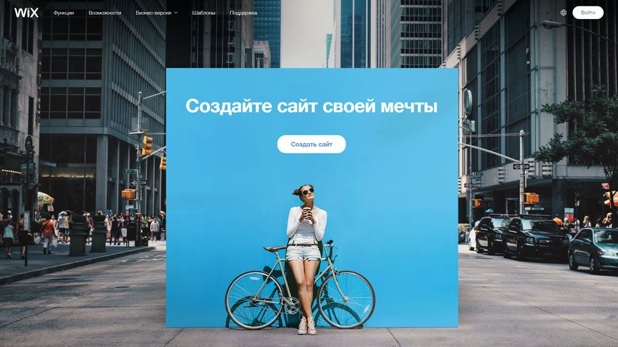

Как же создать свой сайт?
На самом деле есть два способа создать сайт:
- Использование конструктора;
- Самостоятельное написание;
Первый способ:
Создание с помощью конструктора
Wix-это сверхпопулярный конструктор, который лучше всего подходит для создания различного рода сайтов-визиток – сложных с дизайнерской и функциональной точек зрения: портфолио, бизнес-сайт, промо-страница или лендинг. Очень удачными получаются блоги – их легко делать, удобно вести. eCommerce составляющая тоже развитая, особенно с учётом приложений и фирменных ноу-хау вроде Wix Corvid.
Идеально подходит для создания маленьких и средних по объёму сайтов со сложным дизайном и функциональностью. Этот конструктор может быть простым, поверхностным, если нужно: взяли готовый шаблон, заменили демо-контент, поправили цвета, получили сайт. С тем же успехом его можно использовать для конструирования сколь угодно сложных страниц с кучей деталей: анимациями, эффектами, формами для сбора и упаковки информации в базы данных, интерактивными элементами, всплывающими окнами авторизаций разных этапов допуска к информации, всяческими опросами, табами, колонками и прочим.
Викс можно использовать как для создания первого сайта или тренировочной площадки, так и в качестве коммерческого инструмента – разработки сложных и красивых клиентских сайтов. Это хороший первый конструктор и хороший инструмент в помощь опытному дизайнеру. Система построена таким образом, что позволяет легко наращивать возможности дизайна. И даже создавать свои собственные, которых нет в стоковой поставке. Викс доступен для освоения среднестатистическому пользователю ПК.
А так же ряд других конструкторов
Второй способ:
Самостоятельное создание
Для самостоятельного написания сайта нужно обладать:
- Знаниями HTML, CSS
- Усидчивостью
- Терпением
- Стремление учиться
Обязательно к выполнению:
- Cоздание отдельной папки где будет храниться сайт
- Продуманный дизайн и интуитивный интерфейс
- Написание кода в блокноте,но я рекомендую какой-либо кроссплатформенный текстовый редактор
- Подключение сайта к хосту
На саомом деле создание сайта включает кучу нюансов,но при должном усердиии можно создать действительно качественный сайт,но на примере sublime text 3 покажу вам простейшее создание сайта.
Шаг №1
Создаем Шаблом в любом редакторе(я работаю в Sublime text 3)
Шаг №2
Связываем HTML и CSS,задаем фон и пишем первый заголовок
- С помощью команды тега "link" связываес HTML и CSS (пишем внутри парного тега "head")
- Пишем тег "meta" и нажимаем Tab(пишем внутри парного тега "head")
- Дальше создаем новый текстовый документ с раширением CSS
- Задаем там фон черного цвета и пишем первый заголовок с помощью тегов "background-color" и парного тега "h1"
Шаг №3
если посмотреть на код прошлого шага, то можно заметить, что он будет черного цвета,как и фон,следовательно текста не будет видно.Давайте поменяем цвет текста:
- Создаем "class" для открывающего тега "h1"
- Назовем его как-нибудь,например h1
- с помощью команды "color" меняем цвет на белый.
Шаг №4
Как-то скучно выглядит,давайте добавим картинку и разместим текст по центру
- пропишем в файле с CSS команду "text-align:center;". Эта команда расположит наш текст по центру
- теперь добавим картинку,скачав её с интернета и указав путь к ней
- в файле с CSS зададим необходимые ширину и высоту картинки,разположим её по центру
Наш маленький шажок в веб-дизайн был сделан,давайте посмотрим что у нас получилось!
Это наш сайт
Чтобы довести его до ума предстоит ещё много работы,но мы же только учимся)))